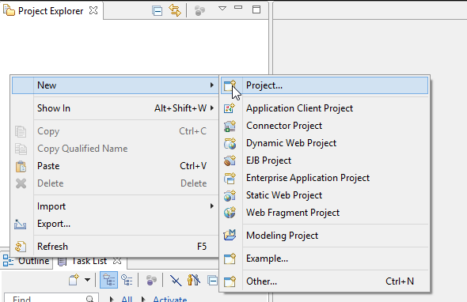
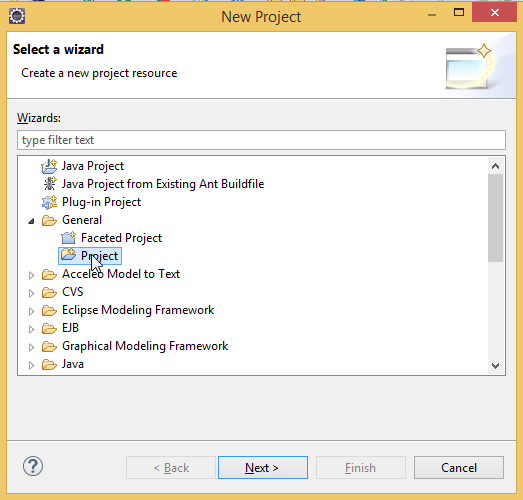
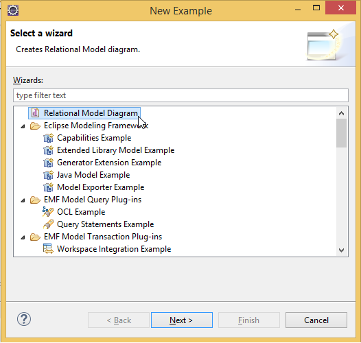
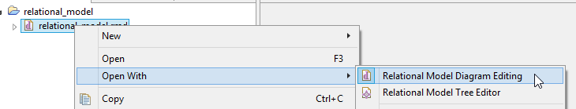

Create Project
Create a new project via
File → New → Project... → General → Project
or right click in Project Explorer.


Select the project name , always with the extension .rmd, and click finish
When the project is created, the next step is create the model.
Right click on the new project and select:
File → New → Example... → Relational Model Diagram.

With this we have created our project with a relational model diagram.
Now we can choose which editor open:
